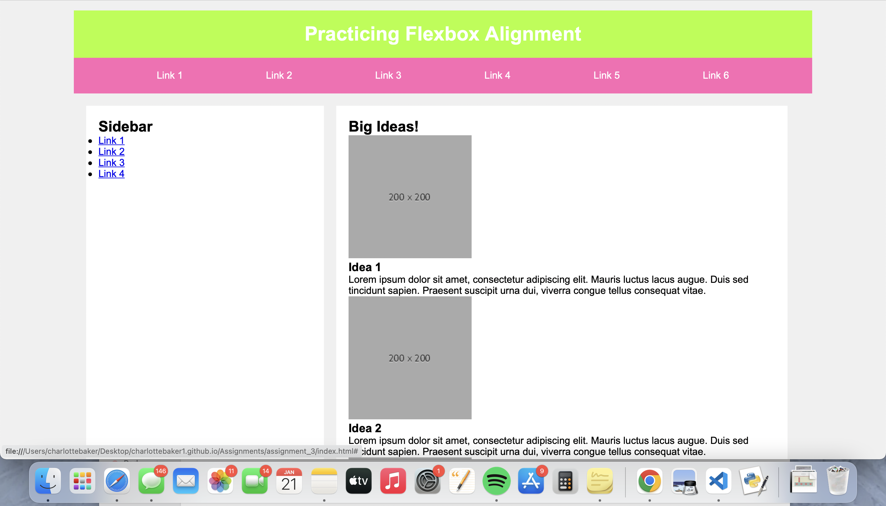
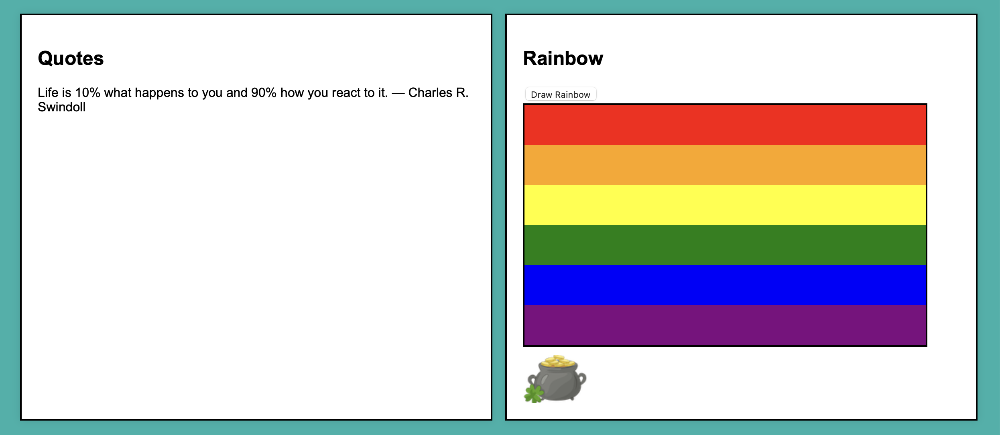

Assignment 1 - Basic HTML

In this assignment, we focused on learning the basics of HTML and putting it into practice on a webpage about a topic without the style elements.
Assignment 2 - Basic CSS
We used CSS in conjunction with HTML to create a more visually appealing webpage with a navigation bar that looked "prettier".
Assignment 3 - Page Layout
This assignment introduced our class to the applications of flexbox in web design and making webpages more user friendly/visually interesting.
Assignment 4 - Main Page CSS
This assignment allowed us to re-style our main page to look better and showcase more parts of each assignment we have completed thus far..
Assignment 5 - Recreate CSS Page
With this webpage, we looked to recreate a similar page to the layout of a chosen link. Working further with flexbox and creating adaptable layouts.
Assignment 6 - JavaScript, Buttons, Functions, etc.

With this webpage, we practiced our new skills with JavaScript to create a more interactive webpage with buttons and a commenting function. Plus, trying out animations!
Assignment 7 - Conditionals
In this assignment we worked with conditionals and if statements to create different functions that respond based on user input in the website display.
Assignment 8 - Loops
In this assignment we continued with the donation thermometer but made it more specific. We also made an animation of a man walking/running across the screen.
Assignment 9 - Arrays
We used the new knowledge about arrays to create this webpage that displayed quotes from an array and drew a rainbow one color at a time for the user to view.